📌 ۱. کتابچه راهنمای تفصیلی و گامبهگام کاربری سامانه
🎯 هدف و اهمیت عملیاتی:
ورود به سامانه منوط به احراز هویت کنترلشده است تا هرگونه ثبت جابهجایی ناوگان یا تغییر شاخصهای فنی مستقیماً به نام کاربر واردشده سند بخورد و از ثبت رکوردهای مجهول در سیستم جلوگیری به عمل آید.
💻 نحوه اتصال و دسترسی در شبکه داخلی مترو:
- دسترسی از طریق پوشه اشتراکی ویندوز (DFS Share):
کلیدهای میانبر
Win + Rرا بفشارید یا در نوار آدرس پنجره فایل ویندوز آدرس زیر را تایپ نمایید:\\srvdfs01\Line1\Depo\سپس بر روی فایل ManovrSystem 0.1.0 کلیکراست کرده و گزینهSend to ➔ Desktopرا انتخاب کنید تا میانبر نرمافزار روی میزکار ایجاد شود. - دسترسی از طریق مرورگر وب:
وارد کردن آدرس IP وبسرور دپو در مرورگرهای استاندارد (مانند
http://192.168.1.100:3000).
🔑 آموزش ورود به سامانه:
نام کاربری و رمز عبور اختصاصی خود را در کادر مربوطه درج نموده و دکمه «ورود» را بزنید. سیستم پس از اعتبارسنجی رمزنگاریشده (Bcrypt)، توکن امنیتی JWT را ایجاد نموده و شما را متناسب با سطح دسترسی به محیط نرمافزار هدایت میکند.
⚠️ هشدارهای امنیتی شیفت:
در انتهای نوبت کاری، حتماً از دکمه آبیرنگ «خروج» در انتهای منوی سمت راست استفاده کنید تا نشست کاری شما بسته شده و اقدامات شیفت بعدی به نام شما ثبت نگردد.
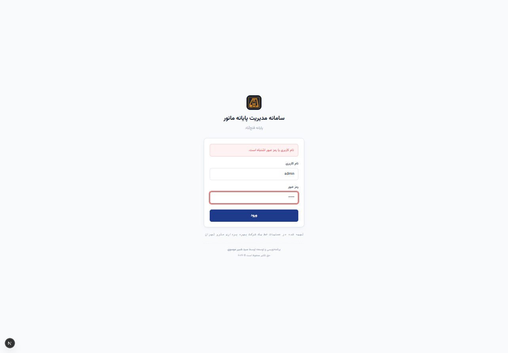
🎯 هدف و اهمیت عملیاتی:
این صفحه قلب تپنده و رصدخانه پایانه فتحآباد است که به عوامل دیسپاچینگ، سرپرست شیفت و مدیران خط دیدی لحظهای و بدون نیاز به تماس بیسیم از وضعیت پارک ناوگان میدهد.
🗺️ کالبدشکافی زونهای پایانه فتحآباد در نرمافزار:
- پارکینگ جنوبی (خطوط ۱ تا ۲۵): خطوط اصلی استقرار و پارک شبانه قطارهای مسافری خط یک.
- پارکینگ شمالی (خطوط ۱ تا ۲۵): خطوط آمادهسازی، انباشت و خطوط اعزامی سرفاصله صبحگاهی.
- خط اصلی (سوله مرکزی): دارای جایگاههای اصلی (۱ تا ۱۸) برای استقرار همزمان قطارهای AC و دیزلهای DC به همراه بیش از ۷۰ جایگاه خالی در امتداد سوله.
- سوله واگنسازی (خطوط ۱ تا ۱۶): خطوط جکها، تعمیرات اساسی، خط بادگیری فیلترها و خط کور ۱.
- دیزلشاپ (خطوط خدماتی): خط تست، خط D7G، باطریخانه، دیزلشاپ B1 و B2 و کارخانههای ۱ و ۲ و ۳ جهت سرویس ناوگان خدماتی.
- خطوط فرعی ۱ و ۲: خط کور ۲، آبگیری، پیتلاین، متروواش (شستوشوی اتوماتیک)، مجاور سوله و خطوط دوار شرقی و غربی.
🚦 راهنمای رنگها و علائم ایمنی ناوگان:
هر نشان قطار روی ریل دارای کد رنگی و نمادهای استاندارد زیر است:
- سبز — آماده به کار: قطار کاملاً سالم و آماده برای اعزام مسافری.
- نارنجی — تحت تعمیر: قطار دارای ایراد فنی در دست اقدام تکنسینها.
- قرمز — غیرفعال / خراب: قطار متوقف یا دارای نقص حاد فنی.
- آبی — آماده اعزام: قطار شستهشده و تستشده جهت اعزام به خط مسافری.
- ⚡ کفشک: مشخصکننده قطارهایی که کفشک جریانگیر آنها فاقد اتصال یا در دست تعویض است.
- 🚨 عدم ATP: اخطار سیگنالینگی مبنی بر خاموش بودن یا نقص سیستم کنترل اتوماتیک قطار.
- 🔄 دوار (A/B/C): موعد فرارسیدن بازدیدهای دورهای و اندازهگیری سایش چرخها.
- 🛑 بدون مجوز: عدم صدور مجوز خروج از پایانه توسط بازرسان ایمنی.
🖱️ قابلیت ثبت مانور به صورت کلیک (Modal Window):
با کلیک مستقیم ماوس بر روی هر ریل یا پلاک قطار، یک پنجره پاپآپ (Modal) بدون خروج از صفحه باز میشود:
- تب اول (قطارهای مستقر): فهرست قطارهای روی خط با ذکر شماره اسلات پارک.
- تب دوم (ثبت مانور جابهجایی): انتخاب قطار، خط مقصد، دکمه سریع
⚡ مانور در محل (ثبت روی همین خط)، نوع مانور و انتخاب راهبران با قابلیت ذخیره آنی. - دکمه 🔴 مسدود کردن خط: امکان مسدودسازی خط به دلیل تعمیرات ریل؛ سیستم بلافاصله خط را قرمز کرده و مانع ورود قطار به آن میشود.
🖐️ قابلیت هوشمند درگ و دراپ ماوس (Drag & Drop):
با کشیدن (درگ) پلاک قطار با کلیک ماوس و رها کردن (دراپ) آن روی ریل مقصد:
- سیستم ظرفیت خط مقصد را ارزیابی کرده و در صورت داشتن جایگاه خالی، پنجره ثبت مانور را باز میکند.
- فیلدهای قطار، خط مبدأ و خط مقصد به صورت اتوماتیک پر میشوند.
- کاربر تنها راهبر ۱ و ۲ را انتخاب کرده و دکمه ثبت نهایی را میزند؛ بدین ترتیب فرآیند ثبت مانور تنها در چند ثانیه انجام میشود.
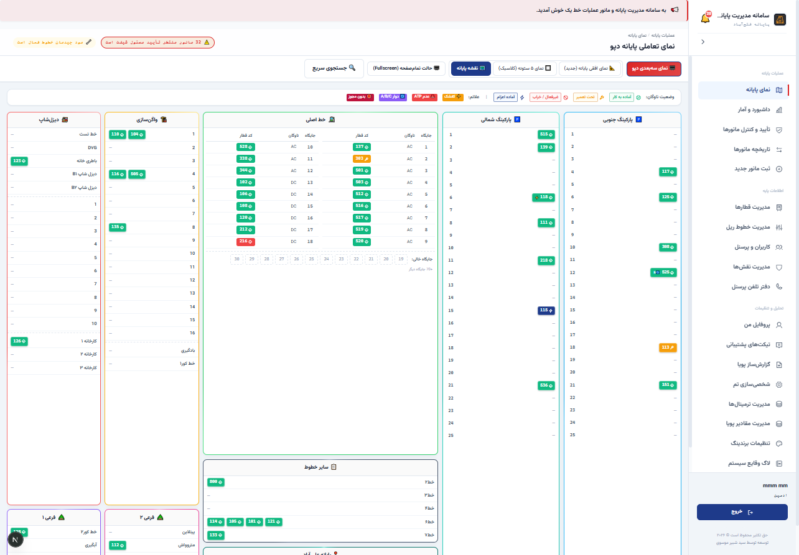
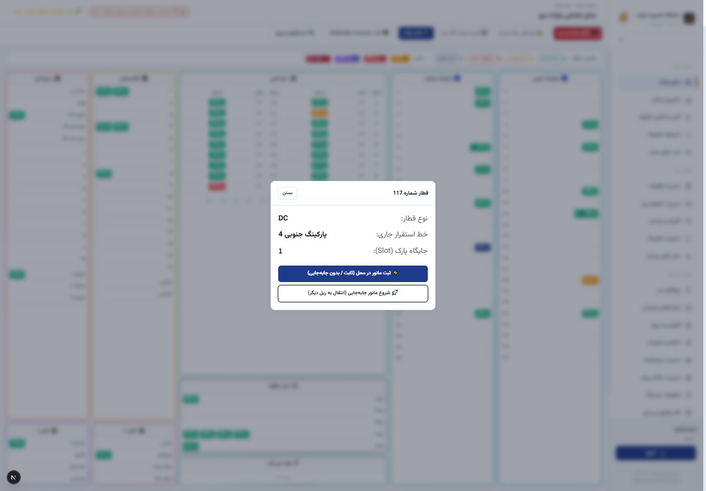
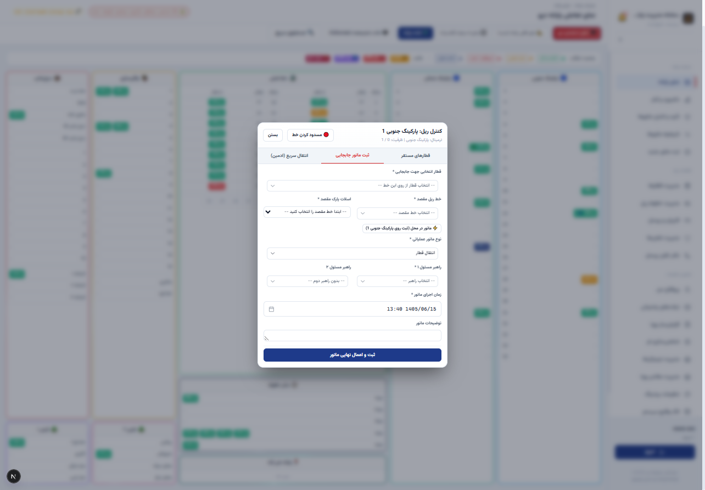
🎯 هدف و اهمیت عملیاتی:
نمای سهبعدی به مدیران ارشد و ناظران اتاق کنترل امکان میدهد بدون حضور فیزیکی در پایانه وسیع فتحآباد، درک فضایی ملموس از چینش قطارها، پر یا خالی بودن خطوط موازی و تراکم ناوگان در سولهها به دست آورند.
🎮 کنترلهای ناوبری ۳بعدی با ماوس:
- چرخش زاویه دید (Orbit): نگه داشتن کلیک چپ ماوس و حرکت نشانگر به اطراف جهت مشاهده پایانه از هر زاویه دلخواه.
- جابهجایی افقی دوربین (Pan): نگه داشتن کلیک راست ماوس جهت حرکت در طول و عرض سوله.
- بزرگنمایی و تمرکز (Zoom): چرخاندن غلتک ماوس جهت بررسی دقیقتر یک خط ریل یا قطار.
⚡ کارکرد بهینه در سیستمهای اداری (Low-Poly):
مدل سهبعدی با شتابدهنده سختافزاری WebGL و با تعداد پولیگونهای کنترلشده بازسازی شده است؛ لذا حتی در رایانههای اداری فاقد کارت گرافیک اختصاصی با سرعت ۶۰ فریم بر ثانیه به شکلی روان اجرا میشود.
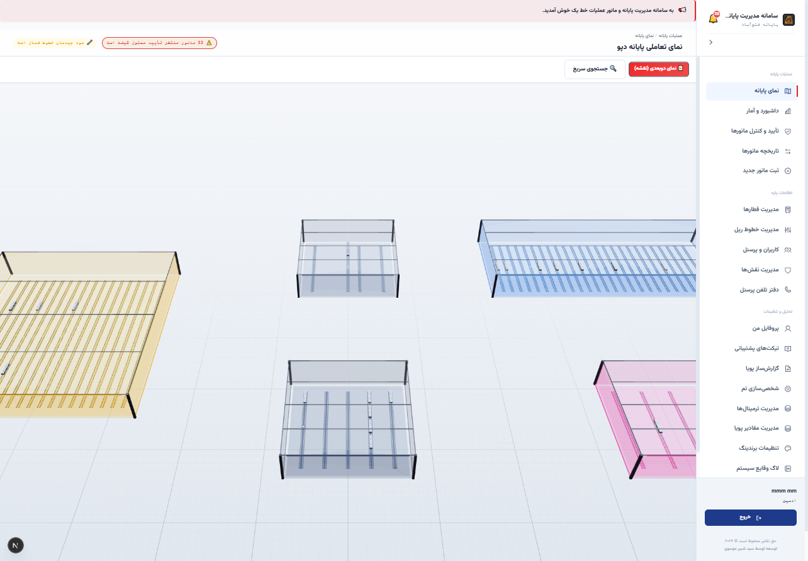
🎯 هدف و اهمیت عملیاتی:
این بخش مرکز هدایت و تصمیمگیری سریع مدیران عملیات است که اطلاعات پراکنده پایانه را به شاخصهای کلیدی عملکرد (KPI) تبدیل میکند.
📊 تحلیل کارتهای آماری بالای داشبورد:
- تعداد کل خطوط (۱۰۴ خط): ظرفیت زیرساختی کل ریلهای پایانه فتحآباد.
- خطوط اشغالشده (۲۴ خط): تعداد خطوطی که در لحظه فعلی ناوگان روی آنها پارک است.
- قطارهای فعال (۱۹۳ قطار): مجموع قطارهای مسافری و دیزلهای آماده یا تحت نگهداری.
- مانورهای در جریان (۳۱ مانور): عملیاتهای کلیدخوردهای که هنوز گزارش خاتمه آنها ثبت نشده است.
- پرسنل شیفت حاضر (۸۵ نفر): عوامل فعال در نوبت کاری روز جاری.
🚨 هشدار مانورهای معوقه و اقدام فوری:
کادر هشدار قرمز رنگ بالای صفحه، تعداد مانورهایی را که نیازمند تأیید نهایی توسط مسئول شیفت هستند نشان میدهد. سرپرست با فشردن دکمه «بررسی و تأیید» مستقیماً اقدام لازم را انجام میدهد.
📢 سامانه انتشار اعلانات پایانه (Broadcast System):
مدیریت پایانه میتواند هشدارهای فوری (مانند لغزندگی خطوط به دلیل بارش یا دستورالعملهای ایمنی) را با تعیین سطح اهمیت (اطلاعیه عمومی، هشدار زرد، پیام بحرانی قرمز) به صورت همگانی مخابره کند تا بر روی صفحه تمام پرسنل آنلاین پایانه ظاهر شود.
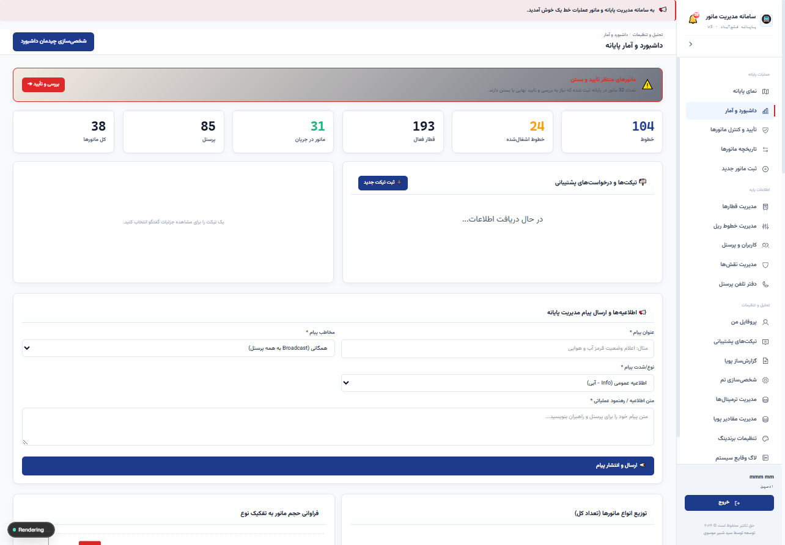
🎯 هدف و اهمیت عملیاتی:
ثبت سیستمی هرگونه حرکت ناوگان، مبنای جلوگیری از سوانح، تداخل ریلها و رصد ساعت کار راهبران است.
📝 فیلدهای کاربردی فرم ثبت:
- نوع مانور (*): انتخاب از بین گزینههای استاندارد (انتقال قطار، تعویض کفشک، شستوشو، دیزل، بادگیری، تعمیرات، تست ترمز).
- انتخاب قطار (*): جستجوی سریع قطار برقی یا دیزل.
- گزینه «مانور در محل (ثبت روی همان خط بدون جابهجایی)»: برای فعالیتهایی نظیر تعویض کفشک یا بازدید فنی که قطار روی ریل خود ثابت میماند؛ با فعالسازی این گزینه، خط مقصد خودکار برابر خط مبدأ تنظیم میشود.
- خط مبدأ و خط مقصد (*): تعیین ایستگاه ریل شروع و پایان مانور.
- راهبر ۱ و راهبر ۲ (کمکی): درج مشخصات راهبران مجری.
- زمان اجرای مانور (*): تقویم شمسی جلالی و ساعت به وقت تهران با دقت دقیقه.
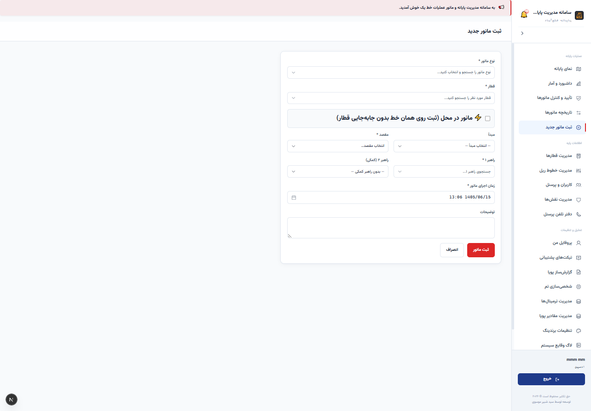
🎯 هدف و اهمیت عملیاتی:
بستن هر پرونده مانوری نیازمند صحهگذاری رسمی است تا مشخص گردد ناوگان به سلامت در خط مقصد مستقر شده و مسدودی خطوط برطرف شده است.
🔄 چرخه حیات دو مرحلهای مانورها:
- مرحله اجرا: پس از ثبت فرم، مانور با برچسب زرد «شروع شده» نمایش داده میشود. پس از اتمام فیزیکی کار در محوطه، راهبر یا مسئول خط دکمه «اتمام» را کلیک میکند تا وضعیت به «پایانیافته» تغییر یابد.
- مرحله تأیید سرپرست شیفت: سرپرست شیفت با بررسی استقرار صحیح قطار، دکمه «تأیید» را میزند تا مهر تأیید رسمی بر سند درج گردد.
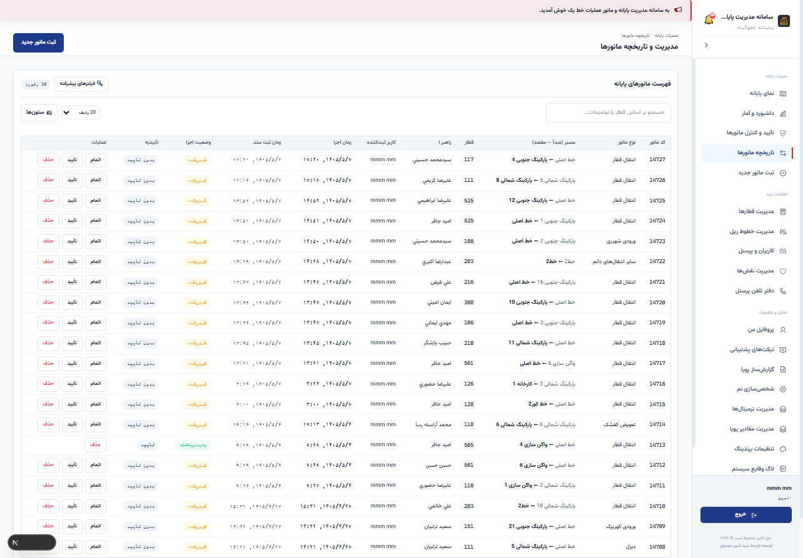
🎯 هدف و اهمیت عملیاتی:
پایش آمادگی ۱۹۵ دستگاه ناوگان پایانه فتحآباد و اطمینان از سلامت تجهیزات حیاتی قبل از اعزام به خط یک مسافری.
🛠️ امکانات ویرایش و تغییر سریع مشخصات:
- تفکیک نوع ناوگان: ۱۵۱ قطار مسافری AC و ۴۱ لوکوموتیو مانوری DC.
- کلیکهای تغییر وضعیت: سوئیچ سریع بین حالت «کفشکدار / بدون کفشک»، «ATP فعال / خراب»، «تعیین دوره دوار A/B/C» و «صدور/لغو مجوز سیر».
- ابزارهای اکسل: دریافت خروجی کامل اکسل ناوگان، یا ویرایش گروهی از طریق بارگذاری مجدد فایل اکسل (Import).
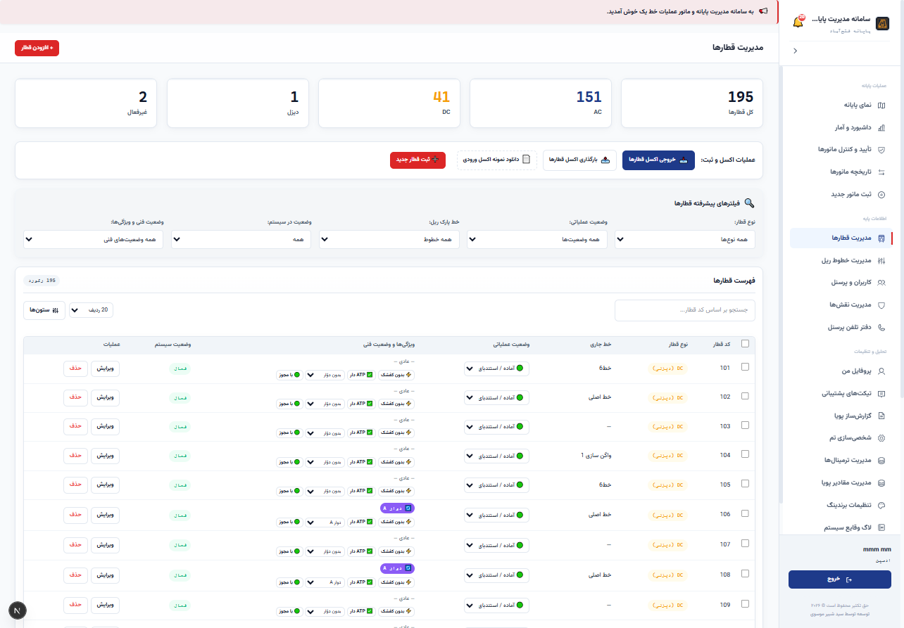
🎯 هدف و اهمیت عملیاتی:
استخراج کارنامه عملکرد شیفتها، ساعات کاری راهبران، آمار ترافیک ریلها و ارزیابی بهرهوری بدون وابستگی به گزارشهای سنتی.
📑 قالبهای پیشساخته گزارش:
شامل ۱۰ قالب آماده: تاریخچه مانورها، قطارهای مستقر در دپو، قطارهای منلتشده (مثلث/متروواش)، آمار ترافیک خطوط، قطارهای بادگیریشده، مانورهای منتظر تأیید، عملکرد راهبران و توزیع شیفت پرسنل.
🖨️ استانداردهای تولید اسناد رسمی:
- خروجی اکسل راستچین (RTL): شیتهای استاندارد فارسی با چیدمان اصولی جهت تحلیلهای اداری.
- خروجی PDF رسمی: تولید فایل PDF با فونت فارسی تعبیهشده وزیرمتن (Vazirmatn) بدون به هم ریختگی حروف، آماده برای بایگانی رسمی.
- نمودارهای تحلیلی: قابلیت تغییر نحوه نمایش بین جدول، نمودار ستونی، نمودار دایرهای و خطی.
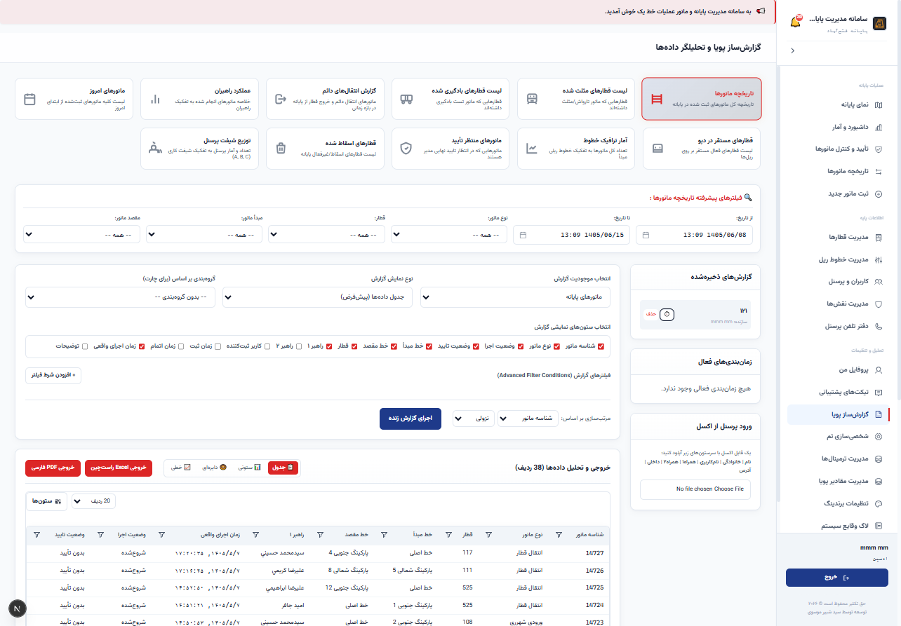
🎯 هدف و اهمیت عملیاتی:
تضمین انضباط عملیاتی از طریق تفکیک دقیق وظایف نظارتی از اجرایی و جلوگیری از تداخل اختیارات کاربران.
👥 نقشهای استاندارد در پایانه فتحآباد:
- نقش ادمین: مدیریت کل سیستم، کاربران، خطوط، برندینگ و پشتیبانگیری.
- نقش مسئول شیفت: ثبت و تأیید مانورها، تغییر وضعیت خطوط و ناوگان.
- نقش مشاهده (ویژه مدیران ارشد و مانیتورینگ): دسترسی کامل به کلیه نماها، نقشههای ۲بعدی و ۳بعدی، داشبورد و گزارشها **صرفاً جهت دیدن و پایش**، بدون وجود دکمههای ویرایش یا حذف؛ بدین ترتیب مدیران میتوانند بدون دغدغه تغییر سهوی دادهها پایانه را رصد فرمایند.
- نقشهای سفارشی: امکان تعریف نقشهای جدید با انتخاب از میان ۴۰ مجوز دانهبندیشده.
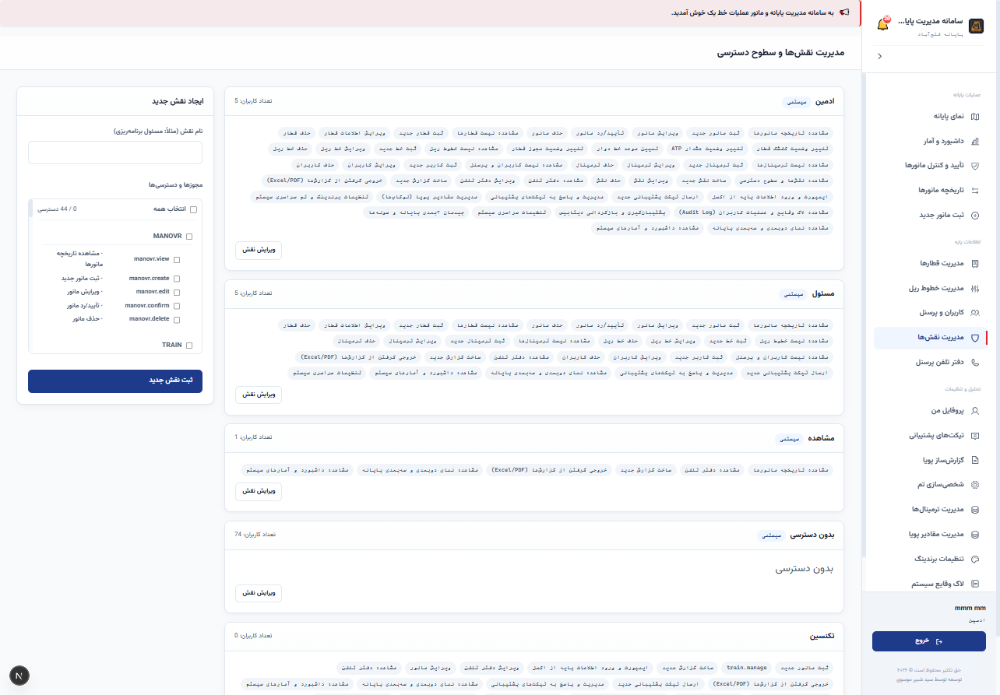
🎯 هدف و اهمیت عملیاتی:
شفافیت کامل در بررسی علل رخدادها، سوانح مانوری و تأخیرات خط یک مترو از طریق ثبت غیرقابلتغییر تمامی رویدادها.
🔍 ویژگیهای رهگیری وقایع:
- ثبت خودکار هویت کاربر عامل، تاریخ شمسی، زمان با دقت ثانیه و شرح دقیق تغییر به زبان فارسی (مانند: «ثبت مانور برای قطار ۱۱۷»، «تغییر وضعیت کفشک قطار ۵۲۵»).
- دکمه «مشاهده جزئیات فیلدی»: امکان مقایسه مقادیر پیشین و جدید برای پاسخگویی در کمیسیونهای سوانح و بازرسی.
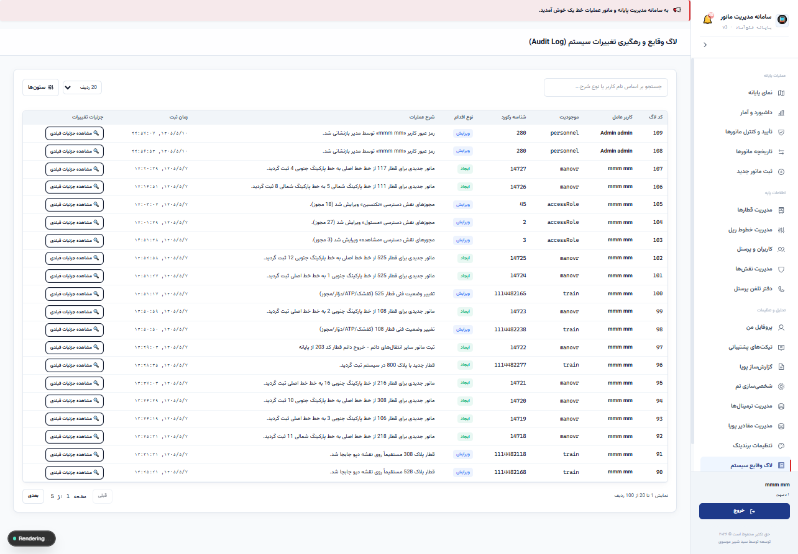
⚙️ ۲. خلاصه مشخصات فنی و معماری نرمافزار
| لایه معماری | تکنولوژی استفادهشده | ویژگیها و مزیت عملیاتی |
|---|---|---|
| هسته فرانتاند | Next.js 16 (App Router) + React 19 | سرعت پاسخدهی بالا، رندر کارآمد و پایداری سازمانی با لود زیر نیم ثانیه |
| زبان توسعه | TypeScript 5 (Strict Mode) | قابلیت نگهداری بالا و حذف خطاهای زمان اجرا (Zero Runtime Error) |
| طراحی و رابط کاربری | Tailwind CSS v4 (RTL Native) | ارگونومی کاربری بالا، پشتیبانی کامل زبان فارسی، طراحی شیشهای مدرن |
| رندر سهبعدی | Three.js & WebGL | نمایش بلادرنگ سوله و خطوط پایانه با گرافیک شتابیافته سختافزاری (Low-Poly) |
| پایگاه داده و ORM | Prisma ORM v6 + SQLite / PostgreSQL | ساختار سبک و صفر-پیکربندی برای شبکه داخلی با امنیت بالای تراکنشها |
| تولید فایل و گزارش | ExcelJS (RTL) + PDFMake (Vazirmatn) | تولید اسناد رسمی سازمانی مطابق با استانداردهای دبیرخانه و بایگانی |
| بستهبندی دسکتاپ | ElectronJS (v43) | خروجی فایل نصبی و پرتابل مستقل ویندوز (.exe) بدون نیاز به اینترنت |
🛡️ ۳. مرزهای عملکردی و الزامات پدافند غیرعامل و ایمنی مترو
- استقلال ۱۰۰٪ از اینترنت عمومی (Offline-First): سامانه برای فعالیت، بارگذاری فونتها، نمودارها یا پردازش به هیچ منبع خارج از شبکه داخلی مترو وابسته نیست و در بالاترین سطح استانداردهای امنیتی تاسیسات حساس قرار دارد.
- عدم تداخل با سیستمهای سختافزاری و سوزنها: سامانه ابزار مدیریت و ثبت است و هیچ فرمانی به ادوات فیزیکی ریل ارسال نمیکند تا هیچ ریسک ناخواستهای در ایمنی سیر ایجاد نگردد.
- پشتیبانگیری متمرکز (Backup & Restore): ابزار پشتیبانگیری داخلی امکان تهیه ایمپورت و اکسپورت دورهای دادهها را با یک کلیک فراهم میسازد.
🖥️ ۴. نیازمندیهای سختافزاری جهت استقرار در پایانه فتحآباد
| بخش | حداقل سختافزار مورد نیاز | مشخصات پیشنهادی |
|---|---|---|
| پردازنده (CPU) | Intel Core i3 نسل ۵ به بالا | Intel Core i5 / Core i7 یا پردازنده سروری Xeon |
| حافظه اصلی (RAM) | ۴ گیگابایت | ۸ الی ۱۶ گیگابایت |
| فضای ذخیرهسازی (Storage) | ۲۰ گیگابایت فضای خالی | ۵۰ گیگابایت SSD |
| ارتباط شبکه | اتصال کابلی LAN با پهنای باند 100Mbps | کارت شبکه گیگابیت 1Gbps در شبکه دپو |
| مرورگر کاربران | Google Chrome نسخه ۱۰۰+ / Microsoft Edge | مرورگر استاندارد سازمانی با فعال بودن WebGL |